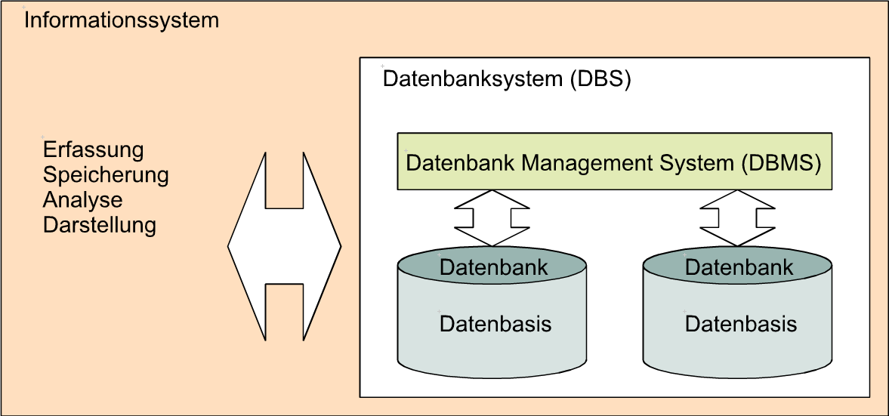

Die Komponenten eines Informationssystems
Betrachten wir nun ein Informationssystem nicht auf funktionale Weise,
wie in Lerneinheit1, sondern hinsichtlich seiner technischen Konzeption, so kann
es durch einen modularen Aufbau charakterisiert werden. Die zentrale Grundlage
stellt die  Datenbank dar. Die Datenbank dient
der Speicherung der Daten ist gekapselt, d.h. sie wird ausschließlich über ein
Datenbank dar. Die Datenbank dient
der Speicherung der Daten ist gekapselt, d.h. sie wird ausschließlich über ein
 Datenbankverwaltungssystem (DBMS) kontrolliert. Das DBMS seinerseits
ist in ein sogenanntes
Datenbankverwaltungssystem (DBMS) kontrolliert. Das DBMS seinerseits
ist in ein sogenanntes  Datenbanksystem
eingebunden. Datenbanken sind also geschlossene Einheiten und werden über eine
kaskadierte, hierarchisch organisierte Zugriffsstruktur verwaltet.
Datenbanksystem
eingebunden. Datenbanken sind also geschlossene Einheiten und werden über eine
kaskadierte, hierarchisch organisierte Zugriffsstruktur verwaltet.

Abbildung 1: Schematischer Aufbau eines digitalen Informationssystems auf der Basis von Datenbanken. (GITTA 2005)Beide Systeme sind klar definierte Werkzeuge mit spezifischen Eigenschaften um die konsistente Zuordnung technischer, semantischer und pragmatischer Aspekte der Daten leisten zu können. In den nachfolgenden Lernobjekten werden diese Eigenschaften von Datenbanksystemen hinischtlich Ihrer Verwendung in Informationssystemen erläutert. Doch zunächst sollten Sie sich anhand der nachfolgenden interaktiven Grafik den Zusammenhang von Daten, Datenbanken, Datenbanksystemen, Datenbankmanagementsystemen und Informationssystemen einprägen.
Abbildung 2: Schematischer Aufbau eines digitalen Informationssystems (GITTA 2005)Bearbeiten Sie...
- Was ist notwendig um ein Datenbanksystem als Informationssystem nutzen zu können?
- Was ist eher als Nutzerschnittstelle geeignet, ein DBS oder ein DBMS?